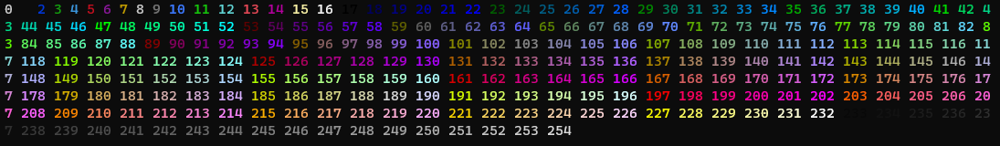

Coloring
All coloring in TermUI is a direct descendant of coloring in curses.
This means we use color_pair() integers for coloring things.
Normally, curses has 8 colors to choose from, but TermUI expands on this. Allowing 254 colors to be used.
Available Color integers
You can view this in your terminal by running the colors.py file in TermUIs source, or by importing and wrapping the files main method.
import curses
from TermUI.colors import main as colors
if __name__ == "__main__":
curses.wrapper(colors)
Using Color
When using color, we simply pass the color integer to the element, or regions color property.
Lets color some text from our The Basics code light-red using color integer 204 seen above:
import curses
from TermUI.ui import UI
from TermUI.region import Region
from TermUI.text import Text
from TermUI.position import Position
def main(stdscr):
ui = UI(stdscr) # create our main ui
region = Region(title="A cool name!",
position=Position.ORIGIN(), size=Position.DEFAULT_TERM_SIZE())
# create our region with the default terminal size for most operating systems.
# Position.ORIGIN() = Position(0,0)
# Position.DEFAULT_TERM_SIZE() = Position(108, 28)
text = Text(content="My first colored element!", position=Position.ORIGIN())
# create our text element, with the text "My first element!"
# and place it at the origin or (0,0) of the region.
# Position.ORIGIN() = Position(0,0)
text.color = 204
# color the text light-red
region.add_element(text) # add the text to our region.
ui.add_region(region) # add the region to the ui
ui.activate() # activate the ui loop, this should always be the last line.
if __name__ == "__main__":
curses.wrapper(main)
Try running this!